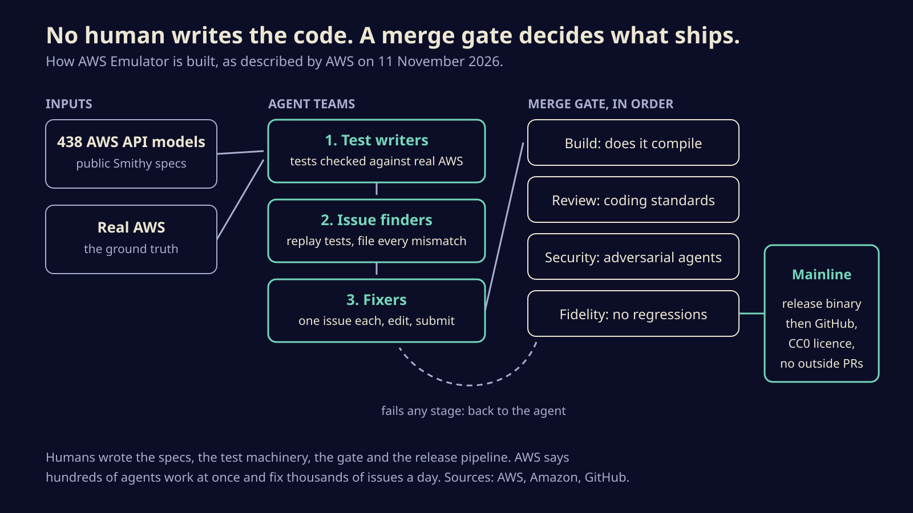

AWS now runs on your laptop for free, and no human wrote or reviewed a line of it
AWS Emulator fakes hundreds of AWS services on a local port so you and your coding agents can test without an account or a bill. Here is how to try it, where it lies to you, and why the way it was built matters more than the tool.
AWS released AWS Emulator on 11 November: a free program that answers AWS API calls on your own machine, so the AWS CLI, the SDKs and your coding agent can create queues, tables and buckets without an account, a network connection or a bill. That alone would be a useful tool. The part people will keep arguing about is how it was made. AWS says autonomous agents wrote all of it, and the engineer who leads the project put it bluntly: "Our team hasn't written or reviewed any of the code."
You get a fast, offline test loop for your code and your agents' code, plus a public example of what shipping agent-written software at scale requires.
What you get, and what it costs
The emulator is a single Rust program that listens on https://127.0.0.1:9297. It supports the APIs of every AWS service that has a published API model, which AWS describes as hundreds of service interfaces. Launch coverage from SiliconANGLE and Unite.AI puts it at more than 200 services built from 438 API models. Calls it does not handle yet come back as HTTP 501 with the error code NotImplemented, so a gap fails loudly instead of quietly pretending to work.
There is no service fee. The source is on GitHub under CC0, a public domain dedication, except a vendored folder under Apache 2.0. The repository does not accept pull requests; you report bugs and mismatches as issues. Releases are frequent: v1.0.343 landed on 13 November with roughly 120 fix entries in its changelog.
State lives in memory until you stop the process, and every running copy gets its own port, keys and data, so you can run one per test job or per agent without collisions.
How to try it in ten minutes
- Install. On Linux, AWS ships RPM and Debian packages that add an
aws-emulatorcommand. On macOS and Windows you run it in Docker, but AWS does not publish a ready-made image; you build one from a short Dockerfile in the documentation. Building from source needs a Rust toolchain, a C compiler and at least 100 GB of free disk. - Start it. On first run it writes fresh credentials, a config file and a certificate to
~/.aws/emulator/9297/. The generated access keys start withEMULATOR, and the emulator rejects anything signed with other keys, so your real credentials never reach it by accident. - Point your tools at it. Set
AWS_ENDPOINT_URL,AWS_SHARED_CREDENTIALS_FILEandAWS_CONFIG_FILEto the emulator's values, set a region, setAWS_EC2_METADATA_DISABLED=true, and unsetAWS_ACCESS_KEY_ID,AWS_SECRET_ACCESS_KEY,AWS_SESSION_TOKENandAWS_PROFILE. Unsetting those last four is the step that stops a test from hitting your real account. Everything runs as the single account000000000000. - Check it. A health endpoint at
/__admin/healthon the same port confirms it is up. Some SDKs, Java among them, need extra setup to trust the local certificate. - Hand it to your agent. AWS publishes an
aws-emulatorskill you add withaws agent-toolkit add-skill, which needs AWS CLI 2.35.0 or later. Rust projects can embed the emulator directly with theaws-emulator-embeddedcrate as a dev dependency.
One more default to know: the emulator sends anonymous usage and error data unless you turn it off with a flag, an environment variable or a config setting.
Where it will lie to you
AWS is unusually candid about the limits, and they are the kind that bite.
It does not evaluate IAM policies or resource policies the way AWS does. A call your real account would refuse can succeed locally. If your tests pass on the emulator, that tells you nothing about whether your permissions are right, and AWS says plainly not to use it for security testing. It also behaves as one account in one place, with no cross-account or cross-Region behavior.
Accuracy varies by service. AWS measures it with fidelity tests: short SDK programs verified against real AWS, which pass only if the emulator returns the same status, body, error code and resulting resources for every call. Scores are published per service as a count, such as 40 of 50, and AWS says the emulator is strongest on control plane calls, the ones that create and list resources, and patchier on data plane calls and on infrastructure as code tools such as CloudFormation, Terraform and the CDK. The test suite is public, failing tests included, and you can run it yourself against your local copy. Check the services you depend on before you trust a green build.

How agents built it without a human reading the diff
Matthew Goldberg, a senior principal engineer at AWS, describes three teams of agents running on Amazon Bedrock AgentCore. Test writers generate tests from AWS's public API models and check each one against real AWS. Issue finders replay those tests against the emulator and file every mismatch. Fixers each take one issue, find the cause, change the code and submit it.
Nothing merges until it clears a gate with four stages: it must compile, pass an agent review against coding standards, pass security agents that review it adversarially, and not lower any fidelity score. Failures go back to the agent. Goldberg says hundreds of agents work on the codebase at once and fix thousands of issues a day; SiliconANGLE's account says dozens, so the exact headcount depends on who is counting and when.
It started small. Goldberg says he gave Kiro, AWS's coding agent, a three-step prompt and got back a passable SQS emulator in about 15 minutes.
The humans did not write the emulator. They wrote the thing that decides whether the emulator is right.
The bigger picture
The tool is a sensible answer to a real gap; LocalStack has long been the default for this job, and now AWS has its own. The method is the news. AWS has put a large, fast-moving codebase in public with no human code review, and staked its credibility on a test suite anyone can rerun. If that holds up, the job of a senior engineer on agent-built software looks less like reading diffs and more like owning the specs, the oracle and the gate. If it does not, the 501s and the fidelity scores will show where, in public, release by release.
Sources
- AWS News Blog, Test your applications against AWS locally with AWS Emulator
- Amazon, How autonomous AI agents built AWS Emulator (Matthew Goldberg)
- AWS documentation, Fidelity in AWS Emulator
- GitHub, aws/aws-emulator repository and releases
- SiliconANGLE, Amazon's open-source AWS Emulator lets developers validate their code locally
- Unite.AI, AWS releases local emulator written entirely by autonomous AI agents
Written with AI for Bade's Mod Shop. Facts are checked against the sources above on the day of publishing; if one is wrong, open an issue.